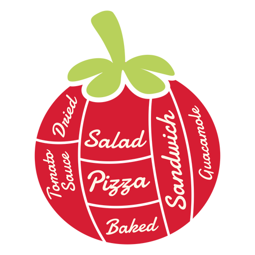

CoolD
 O Monitoramento de Temperatura e Umidade
O Monitoramento de Temperatura e Umidade para sua Empresa
e tenha acesso ao Monitoramento 
 Segurança
Segurança
 Temperatura
Temperatura
Nosso serviço
Nosso serviço consiste no monitoramento da
temperatura e umidade do transporte de tomate
por meio de sensor, o sensor será instalado
no baú no caminhão para que seja feito o
acompanhamento da mercadoria.
Nosso sistema
é extremamente importante para
ter uma
economia de custos ,pois, diferente do
transporte
a granel, não temos uma grande
quantidade de
desperdício, não há mudanças na
qualidade do
produto e o produto corre menos risco de ser
contaminado ou amassado.
Além do monitoramento de temperatura e umidade, temos rastreamento em
tempo real, auxilia na rotina da empresa.